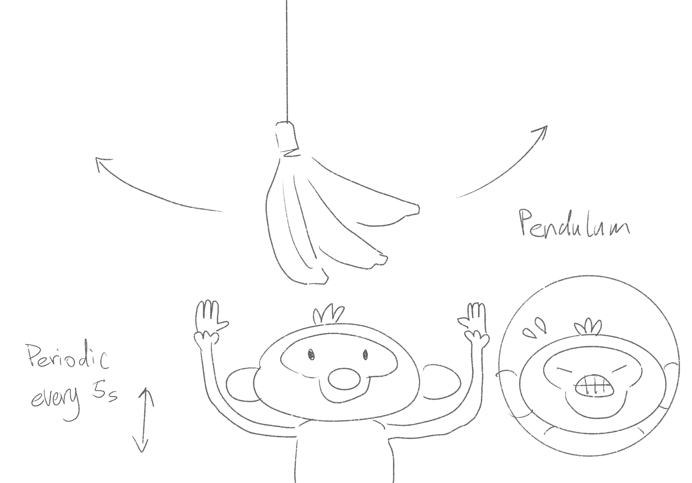
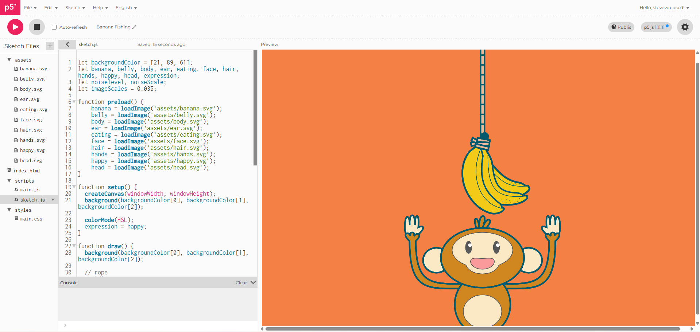

Banana Fishing: Documentation of P5js Animation by Steve Wu | GIXD 503 Creative Prototyping | ACCD 19 November, 2025
Introduction
This is the documentation for how I made the P5.js animation you see on the banner. You can also view the code here.
Step 1: Sketch
First, I sketched the composition on my ipad. Previewing the assets I might need later.

sketch of the compositionStep 2: Prepare the Assets
Then I use Figma to create the assets.
 assets on Figma
assets on Figma
I segmented the layers of the monkey so I can control the animation with more details.
 segemented elemets
segemented elemets
Eventually, I exported these assets in svg format.
Step 3: Upload to P5.js
I uploaded these assets to P5.js editor, and assembled them on the canvas.

P5.js canvasI also used a loop to create the rope on top of the bananas. You can notice I accumulated the translation function, which is useful later.
Step 4: Animations
I animated the rope and the bananas using rotation.
Because the ropes are accumulated. The rotation can also accumulate, creating this swinging motion.
I also used trigonometry to make the pendulum animation.
Similar strategies are used to animate the monkey as well. I paced the speed of each elements of the monkey differently. This way the animation looks more lively.
Step 5: Background Animation
Lastly, I want to make the background more interesting. I used the noise function to create a heart beat looking line.
In order to make the line wiggles this way. I also used trigonometry to control the scale of the noise so it changes with a timed pace. I also make the scale of the change proportional to the distence to the center.
Conclusion
Finally, the animation is done!